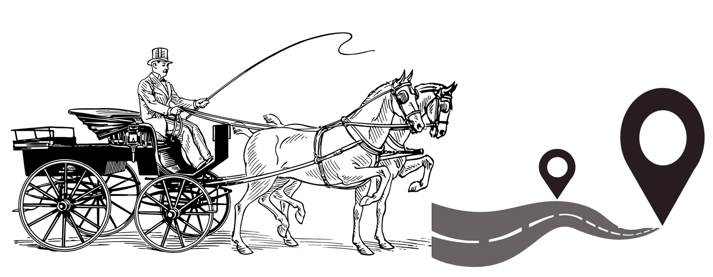
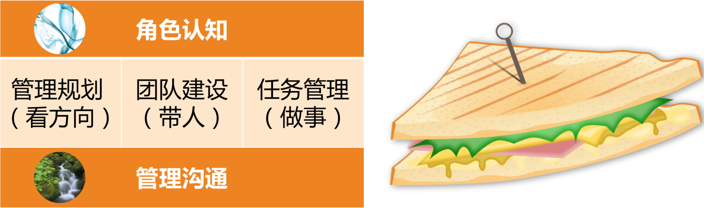
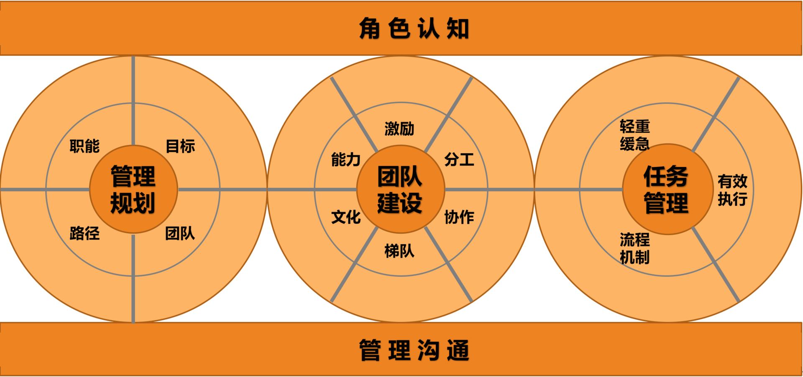

- 00 开篇词 你为什么需要学管理？.md.html
- 01 多年前的那些工程师都去哪了？.md.html
- 02 我要不要做管理呢？内心好纠结！.md.html
- 03 哪些人比较容易走上管理岗位？.md.html
- 04 我要不要转回去做技术呢？.md.html
- 05 作为技术管理者，我如何保持技术判断力？.md.html
- 06 我这样的风格能做管理吗？.md.html
- 07 我能做好管理吗，大家服我吗？.md.html
- 08 管理到底都做哪些事儿？.md.html
- 09 从工程师到管理者，角色都发生了哪些变化？.md.html
- 10 新经理常踩的坑儿有哪些？.md.html
- 11 我刚开始带团队，从哪里着手呢？.md.html
- 12 如何界定我团队是干什么的呢？.md.html
- 13 如何为团队设定合理的目标呢？.md.html
- 14 如何来规划团队的组织结构呢？.md.html
- 15 我都要申请哪些资源呢？.md.html
- 16 团队建设该从哪里入手？.md.html
- 17 如何提升员工的个人能力？.md.html
- 18 如何提升员工的工作意愿和积极性？.md.html
- 19 如何兼顾团队分工的稳定性和灵活性？.md.html
- 20 有什么方法可以有效提升团队凝聚力吗？.md.html
- 21 如何物色和培养核心人才？.md.html
- 22 如何建设团队文化，营造团队氛围？.md.html
- 23 如何和低绩效员工谈绩效？.md.html
- 24 如何让团建活动不再“收效甚微”？.md.html
- 25 多任务并行该如何应对？.md.html
- 26 如何确保项目的有效执行？.md.html
- 27 如何让流程机制得到有效的执行？.md.html
- 28 管理沟通那些事儿.md.html
- 29 沟通经常鸡同鸭讲，说不到一块怎么办？.md.html
- 30 如何掌控自己的情绪，以及如何管理情绪化的员工？.md.html
- 31 我各方面做得都很好，就是做不好向上沟通.md.html
- 32 横向沟通和非职权影响力.md.html
- 33 向下沟通的常见实例解析.md.html
- 34 管理沟通上有哪些常见的坑儿呢？.md.html
- 35 从空降谈管理方法论的积累.md.html
- 36 走出自己的管理之路.md.html
- 捐赠
08 管理到底都做哪些事儿？
前面第一模块的七篇文章，都是围绕着“why”的问题展开，探讨你是否要做管理，以及如何面对刚刚做管理时的茫然、疑虑与纠结。如果你已经理顺了内心的力量，希望在管理这条路上大干一场，那么接下来，你还会遇到一个关于“what”的问题：管理到底都要做哪些事呢？
在实际的工作中，新经理基本上都是看上级怎么做，就“照葫芦画瓢”跟着学，之前的上级做过什么就跟着做什么。如果碰到的问题都是之前接触过的，那还好，一般都还是能应付的。
但管理恰恰不是一个靠一成不变的“套路”能做好的事情，每一个情境都是具体而崭新的，当面对新问题手足无措的时候，你可能就会殷切地期盼有人告诉你：管理到底都包含了哪些工作？对于这样的问题到底应该从哪里着手呢？
我在带新经理的时候，也常常会被问到这样类似的问题，比如：
“有没有管理框架或管理地图呢？若有的话，我就清楚都需要做哪些事儿了。”
“工程师有技术图谱，那么管理有没有管理图谱呢？若有的话，我也就知道该提升哪些能力了。”
不瞒你说，我自己也对这个问题非常感兴趣。作为工程师出身的管理者，我对于管理理论的依据和逻辑的追问是有执念的。我查阅了很多管理书籍和网页，但是并没有找到哪里有所谓的“管理框架”或“管理图谱”，对此我一直耿耿于怀。尤其当遇到类似下面这些复杂的“大问题”时，我对于管理框架的执念就更深了。
比如，我时常会被问到，“如何打造高效执行的团队？”“如何群策群力打胜仗？”“如何做团队建设？”等等。
这类问题的一个共同点就是“大”，虽然大家都可以凭经验给出几点建议，但很难给出系统的回答，因为这些问题本身包含着很多子问题。例如，第一个问题“如何打造高效执行的团队”，至少包含这样三个子问题：
对于第二个问题也是如此，“如何群策群力打胜仗”，也至少需要回答三个子问题：
对于第三个问题，“如何做团队建设”，要想回答好，也得先弄清楚：
于是你发现了，一个大问题背后依然是多个难以捉摸的大问题，很难理出头绪。
而且随着时代背景的不同，这些问题的答案也差异很大。比如工业时代的团队和知识经济时代的团队，对于如何提升团队工作效率，所采取的有效手段甚至是相反的：工业时代主要靠加强外驱，讲究“胡萝卜加大棒”，追求严格管控；而知识经济时代，更多是靠激发内驱，弹性工作制也好，发挥员工优势也好，都是希望员工更主动、自主，从而有更多的创造力。
这也就难怪，直到今天也没有人能够给“管理”下一个被普遍认同的定义，因为“管理”这个概念太复杂了，且随着时代背景、社会环境的改变而不断变化。
不过，这不妨碍我们先了解一下，管理学历史上的几位泰斗人物是怎么理解“管理”的。
古典管理理论的代表人物亨利·法约尔认为，“管理是由五项要素组成的一种普遍的人类活动，这五个要素是：计划、组织、指挥、协调和控制。”由此可以看出他特别关注管理的过程性，强调“做事”，不愧为“管理过程学派”的创始人。
“科学管理之父”弗雷德里克·泰勒认为，“管理就是确切地知道你要别人干什么，并使他用最好的方法去干。”他关注的焦点在于干什么，以及怎么干，有明显的目标性和方法性，强调“目标”和“做事”。
“现代管理学之父”彼得·德鲁克认为，“管理是一种实践，其本质不在于‘知’，而在于‘行’；其验证不在于逻辑，而在于成果。其唯一权威就是成就。”他这个说法的焦点在于实践性和结果性。众所周知，德鲁克是“目标管理理论”的创始人，尤其强调“目标”。
当代管理大师斯蒂芬·罗宾斯给管理的定义是：“所谓管理，是指同别人一起，或通过别人使活动完成得更有效的过程。”这个说法的背后蕴含着管理的三个要素：人、过程和有效，用正式一点的词汇叫组织性、过程性和目标性，强调了“带人”“做事”和“目标”。
显然，这些大师给了我们一些可以参考的真知灼见，但是该怎么实操呢？该如何带人，如何做事，如何规划方向呢？关于这类“大问题”，是不是就无迹可寻了呢？有没有办法一两句话能说清楚呢？
老子说，“治大国，若烹小鲜”，意思是说，很复杂的事物往往可以用很简单的事情来阐释。于是，一个常见的说法是把做管理比喻成“带兵打仗”；另外，也有人把做管理比喻成教练“指导球队比赛”，还有人认为做管理就像指挥家“指挥乐队演奏”，等等。
这些说法听起来都比管理本身要生动易懂。而且，你会发现它们有一个共同点，就是都由两个要素组成：一个要素关于人和组织的，像“带兵”“球队”“乐队”，简称“带人”；另一个要素是关于事务的，像“打仗”“指导比赛”“指挥演奏”等，简称“做事”。
如果让我对管理做一个形象而又生动的比喻的话，我更愿意把做管理看作是：一位马车夫驾驭着一辆多匹马拉的马车赶往目的地。这个比喻也体现了前面的两大要素：带人和做事，只不过这里的“人”是一群拉车的马，而“事”就是驾驶马车。
下面，我们就仔细探讨一下，如何驾驭好这辆马车和如何做管理有哪些相通之处。

“马车模型”示意图
首先，要想驾驭马车，就得先跳上马车；无论你之前是什么角色，跳上马车后，你就成为一名马车夫了。这就是所谓的“角色认知”。对应到管理就是，从一位工程师到一个团队的管理者，也需要对“管理者”这个角色有充分的认知。
其次，在驾驶马车之前，一定要先看看目的地在哪里，该走哪条路，朝哪个方向行进。对应到管理中，就是得弄清楚团队的工作目标，以及战略选择。我们往往称之为“目标管理”，或者“管理规划”，它代表着工作的方向性问题。
再次，我们开始驾驶马车，至少需要做两件事：一边抓住马缰，关照好马的状态和组织分工；一边挥舞马鞭，协调好整个马队的前进方向和节奏，让马匹一起用力把车拉到一个个里程碑和目的地，完成一段一段的旅程。前者对应到管理中，很像是在做人和组织相关的工作，我们称为“带人”，或者“团队建设”；后者对应到管理中，很像是在完成一个个项目或一项项任务，我们称为“做事”，或者叫“任务管理”。
最后，由于驾驶马车过程中，车夫需要和马匹，以及马车之外的其他环境要素进行互动和沟通，这对应到管理工作中，就是“管理沟通”。
综合上面驾驭马车的五个要素，对应到管理工作中，便是角色认知、管理规划、团队建设、任务管理和管理沟通五个管理要素。
其中，角色认知存在于管理工作的一言一行、一举一动，它无处不在，就好像空气一样，这是做好管理的基础和前提；而管理沟通贯穿于所有管理工作之中，把所有相关的合作方都连接在一起，就好像水流一样，是做好各项工作的手段和载体。管理规划、团队建设和任务管理，就是管理者的工作内容了，分别对应着看方向、带人和做事，这和近代几位管理大师的观点也是统一的。
我们把无所不在的空气般的认知作为“天”，把承载一切管理工作的沟通作为“地”，把管理者需要做的看方向、带人、做事放在中间，就组成了管理者的管理框架，由于看上去像一块三明治，我把它形象地称为“管理三明治”。

“管理三明治”框架示意图
你可能会说，这个框架还是很“虚”啊，看完之后依然不知道要从哪里着手去回答文章开头的那些大问题呢。
别着急，我会把“管理三明治”这个框图，细化为一个可以定位大部分管理问题的“管理全景图”，或者叫“管理图谱”，通过 13 个要素呈现给你，这样你就可以按图索骥地去拆解类似“如何打造高效执行的团队”“如何群策群力打胜仗”“如何顺利空降到一个新团队”这样的大问题了。

“管理图谱”
只是鉴于本文篇幅所限，我现在先不展开探讨，但是在后面的文章中，这 13 个要素一个都不会遗漏，我会逐一做具体阐释。
至此我们倒是可以回答文章标题的问题了。
如果你要问我，管理都做哪些事呢？我会说：“主要做好三件事：带人、做事、看方向，当然，做好这些事都要基于良好的角色认知和管理沟通。”
如果你要追问我，具体该如何带人、做事、看方向，以及该如何提升角色认知和管理沟通技巧呢？套用一句林徽因的台词，“答案很长，我准备用整个专栏来回答，你准备好要听了吗？”
© 2019 - 2023 Liangliang Lee. Powered by gin and hexo-theme-book.